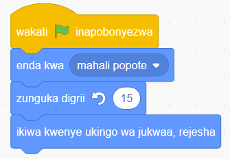

7.Buruta na dondosha bloku ya ‘ikiwa kwenye ukingo wa jukwaa, rejesha’ kwenye eneo la kuandikia.
8.Unganisha bloku ya ‘ikiwa kwenye ukingo wa jukwaa, rejesha’ kwenye bloku ya ‘zunguka digrii au nyuzi’.
9.Utapata programu kamili kama inavyoonekana katika Kielelezo namba 30.

Maelezo ya programu fikivu ya Quorum: Programu iliyokamilika kwenye Scratch au Quorum. Wakati bendera ya kijani inapobonyezwa, kitu huenda mahali popote, huzunguka digrii 15, na hurejea kikigusa ukingo wa jukwaa.
Kielelezo namba 30: programu iliyokamilika.